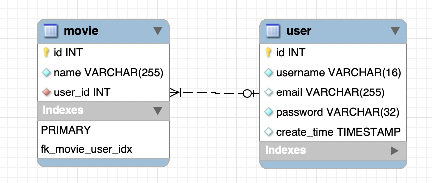
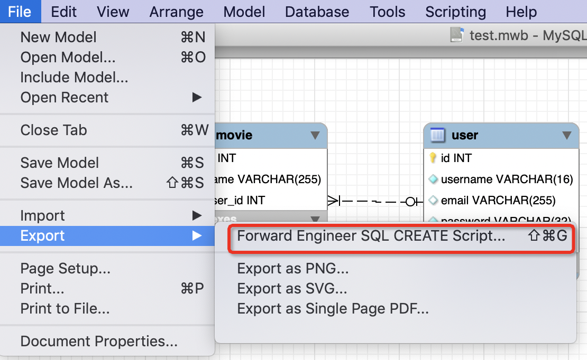
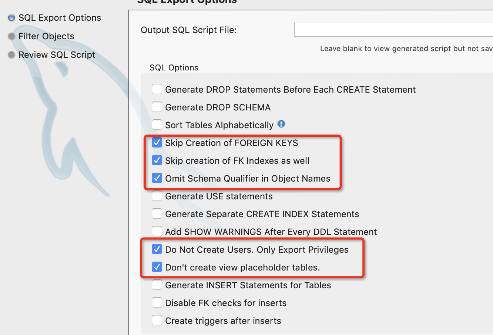
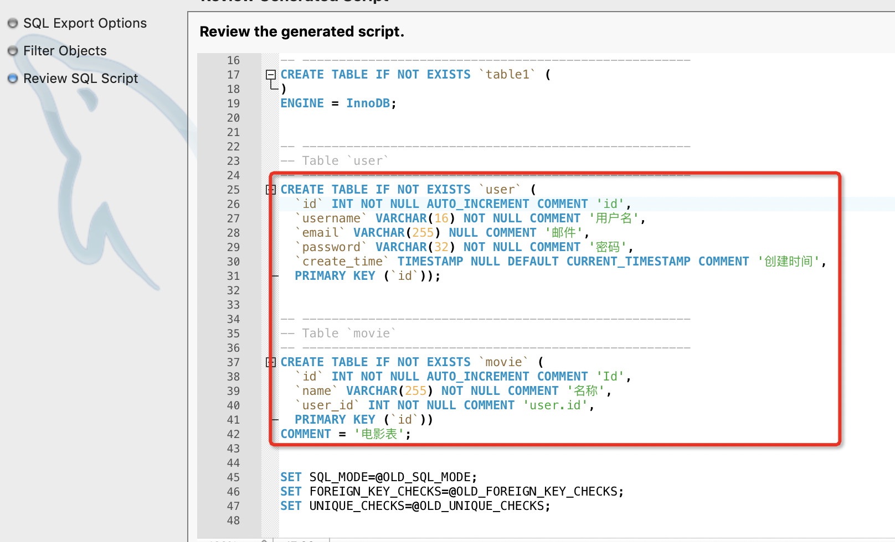

<!DOCTYPE HTML>
<html lang="zh-CN">
<head><meta name="generator" content="Hexo 3.8.0">
    <!--Setting-->
    <meta charset="UTF-8">
    <meta name="viewport" content="width=device-width, user-scalable=no, initial-scale=1.0, maximum-scale=1.0, minimum-scale=1.0">
    <meta http-equiv="X-UA-Compatible" content="IE=Edge,chrome=1">
    <meta http-equiv="Cache-Control" content="no-siteapp">
    <meta http-equiv="Cache-Control" content="no-transform">
    <meta http-equiv="pragma" content="no-cache">
    <meta http-equiv="Cache-Control" content="no-cache, must-revalidate">
    <meta http-equiv="expires" content="Mon Apr 06 2020 02:12:39 GMT+0800 (CST)">
    <meta name="renderer" content="webkit|ie-comp|ie-stand">
    <meta name="apple-mobile-web-app-capable" content="周立的博客 - 关注Spring Cloud、Docker">
    <meta name="apple-mobile-web-app-status-bar-style" content="black">
    <meta name="format-detection" content="telephone=no,email=no,adress=no">
    <meta name="browsermode" content="application">
    <meta name="screen-orientation" content="portrait">
    <meta name="theme-version" content="1.2.3">
    <meta name="root" content="/">
    
    <!--SEO-->

    <meta name="keywords" content="工作,数据库,MySQL,PostgreSQL">


    <meta name="description" content="个人习惯用MySQL workbench EER数据建模，然后生成SQL语句到数据库中执行，这样表之间的关系比较直观。
像下面这样：

画图


正向工程，生成DDL语句：


忽略生成外键，以及外键索引啥的：


生成的DDL语句：


到数据库执行。


踩坑了最近团队微调，我被调整到另一...">


<meta name="robots" content="all">
<meta name="google" content="all">
<meta name="googlebot" content="all">
<meta name="verify" content="all">
    <!--Title-->


<title>MySQL建表语句转PostgreSQL建表语句全纪录 | 周立的博客 - 关注Spring Cloud、Docker</title>


    <link rel="alternate" href="../../atom.html" title="周立的博客 - 关注Spring Cloud、Docker" type="application/atom+xml">


    

    


<link rel="stylesheet" href="../../static/css/bootstrap.min-271a649e0635d6fa1b.css">
<link rel="stylesheet" href="../../static/css/font-awesome.min-ac2bebcf7fb5b26.css">
<link rel="stylesheet" href="../../static/css/style-6f3c140f6eee20e6591da00ec0.css">


    


    <script>
        var _hmt = _hmt || [];
        (function() {
            var hm = document.createElement("script");
            hm.src = "https://hm.baidu.com/hm.js?13766878cde148282622871dd245a973";
            var s = document.getElementsByTagName("script")[0];
            s.parentNode.insertBefore(hm, s);
        })();
    </script>


    

</head>

</html>
<!--[if lte IE 8]>
<style>
    html{ font-size: 1em }
</style>
<![endif]-->
<!--[if lte IE 9]>
<div style="ie">你使用的浏览器版本过低，为了你更好的阅读体验，请更新浏览器的版本或者使用其他现代浏览器，比如Chrome、Firefox、Safari等。</div>
<![endif]-->

<body>
    
    <nav class="main-navigation">
    <div class="container">
        <div class="row clearfix">
            <div class="col-md-12 column">
                <nav class="navbar navbar-default" style="background-color:#fff;border:0;margin-bottom:0" role="navigation">
                    <div class="navbar-header">
                        <button type="button" class="navbar-toggle" data-toggle="collapse" data-target="#navbar-collapse-1">
                            <span class="sr-only">切</span>
                            <span class="icon-bar"></span>
                            <span class="icon-bar"></span>
                            <span class="icon-bar"></span>
                        </button>
                        <a class="logo" href="../../index.html">
                            周立的博客
                        </a>
                    </div>

                    <div class="collapse navbar-collapse" style="border:0;" id="navbar-collapse-1">
                        <ul class="nav navbar-nav">
                            
                                
                                    <li>
                                        <a href="../../about.html" target="_blank">
                                            <i class="fa fa-user"></i>
                                            关于我
                                        </a>
                                    </li>
                                
                            
                                
                                    <li>
                                        <a href="../../archives.html" target="_blank">
                                            <i class="fa fa-archive"></i>
                                            归档
                                        </a>
                                    </li>
                                
                            
                                
                                    <li class="dropdown">
                                        <a href="#" class="dropdown-toggle" data-toggle="dropdown" data-hover="dropdown">
                                            <i class="fa fa-fire"></i>
                                            系列课程
                                            <strong class="caret"></strong>
                                        </a>
                                        <ul class="dropdown-menu">
                                            
                                                <li>
                                                    <a href="../../docker/00-docker-lession-index.html" target="_blank">
                                                        <i class="fa "></i>
                                                        Docker系列教程
                                                    </a>
                                                </li>
                                            
                                                <li>
                                                    <a href="../../spring-cloud/spring-cloud-index.html" target="_blank">
                                                        <i class="fa "></i>
                                                        Spring Cloud系列教程
                                                    </a>
                                                </li>
                                            
                                                <li>
                                                    <a href="../../spring-boot/spring-boot-index.html" target="_blank">
                                                        <i class="fa "></i>
                                                        Spring Boot系列教程
                                                    </a>
                                                </li>
                                            
                                        </ul>
                                    </li>
                                
                            
                                
                                    <li class="dropdown">
                                        <a href="#" class="dropdown-toggle" data-toggle="dropdown" data-hover="dropdown">
                                            <i class="fa fa-book"></i>
                                            开源书
                                            <strong class="caret"></strong>
                                        </a>
                                        <ul class="dropdown-menu">
                                            
                                                <li>
                                                    <a href="../../books/rocketmq.html" target="_blank">
                                                        <i class="fa fa-rocket"></i>
                                                        RocketMQ开发者指南
                                                    </a>
                                                </li>
                                            
                                                <li>
                                                    <a href="../../books/skywalking.html" target="_blank">
                                                        <i class="fa fa-skyatlas"></i>
                                                        Skywalking 6.2.0中文文档
                                                    </a>
                                                </li>
                                            
                                        </ul>
                                    </li>
                                
                            
                                
                                    <li class="dropdown">
                                        <a href="#" class="dropdown-toggle" data-toggle="dropdown" data-hover="dropdown">
                                            <i class="fa fa-cog"></i>
                                            工具
                                            <strong class="caret"></strong>
                                        </a>
                                        <ul class="dropdown-menu">
                                            
                                                <li>
                                                    <a href="../../tools/markdown2.html" target="_blank">
                                                        <i class="fa "></i>
                                                        微信排版工具2.0
                                                    </a>
                                                </li>
                                            
                                        </ul>
                                    </li>
                                
                            
                        </ul>
                        
                            <form id="search-form" class="navbar-form navbar-right">
                                <div class="form-group input-group">
                                    <input type="text" id="local-search-input" class="form-control" placeholder="搜我...">
                                    <span class="input-group-btn">
                                        <a class="btn btn-default">
                                            <i class="fa fa-search"></i>
                                        </a>
                                    </span>
                                </div>
                                <div id="local-search-result" class="local-search-result-cls"></div>
                            </form>
                        
                    </div>
                </nav>
            </div>
        </div>
    </div>
</nav>

    <a href="javascript:;" target="_blank">
        
    </a>


    <section class="content-wrap">
        <div class="container">
            <div class="row">
                <main class="col-md-8 main-content m-post">
                    

<p id="process"></p>
<article class="post">
    <div class="post-head">
        <h1 id="MySQL建表语句转PostgreSQL建表语句全纪录">
            
                MySQL建表语句转PostgreSQL建表语句全纪录
            
        </h1>
        <div class="post-meta">
    
        <span class="categories-meta fa-wrap">
            <i class="fa fa-folder-open-o"></i>
            <a class="category-link" href="../../categories/工作/index.html">工作</a>
        </span>
    

    
        <span class="fa-wrap">
            <i class="fa fa-tags"></i>
            <span class="tags-meta">
                
                    <a class="tag-link" href="javascript:;">MySQL</a> <a class="tag-link" href="javascript:;">PostgreSQL</a> <a class="tag-link" href="../../tags/工作/index.html">工作</a> <a class="tag-link" href="../../tags/数据库/index.html">数据库</a>
                
            </span>
        </span>
    

    
        
        <span class="fa-wrap">
            <i class="fa fa-clock-o"></i>
            <span class="date-meta">2018/12/30</span>
        </span>
        
            <span class="fa-wrap">
                <i class="fa fa-eye"></i>
                <span id="busuanzi_value_page_pv"></span>
            </span>
        
    
</div>
        
        
    </div>
    
    <div class="post-body post-content" id="post-content">
        
    <div class="toc-article">
        <strong>
            目录
        </strong>
        <div class="toc-content">
            <ol class="toc"><li class="toc-item toc-level-2"><a class="toc-link" href="#踩坑了"><span class="toc-text">踩坑了</span></a></li><li class="toc-item toc-level-2"><a class="toc-link" href="#开源的DDL转换工具"><span class="toc-text">开源的DDL转换工具</span></a></li><li class="toc-item toc-level-2"><a class="toc-link" href="#自己开发工具"><span class="toc-text">自己开发工具</span></a></li><li class="toc-item toc-level-2"><a class="toc-link" href="#效果演示"><span class="toc-text">效果演示</span></a></li><li class="toc-item toc-level-2"><a class="toc-link" href="#不足"><span class="toc-text">不足</span></a></li></ol>
        </div>
    </div>


        <p>个人习惯用MySQL workbench EER数据建模，然后生成SQL语句到数据库中执行，这样表之间的关系比较直观。</p>
<p>像下面这样：</p>
<ul>
<li><p>画图</p>
<p></p>
</li>
<li><p>正向工程，生成DDL语句：</p>
<p></p>
</li>
<li><p>忽略生成外键，以及外键索引啥的：</p>
<p></p>
</li>
<li><p>生成的DDL语句：</p>
<p></p>
</li>
<li><p>到数据库执行。</p>
</li>
</ul>
<h2 id="踩坑了"><a href="#踩坑了" class="headerlink" title="踩坑了"></a>踩坑了</h2><p>最近团队微调，我被调整到另一个小团队。前两天接了个新需求，于是我依然使用MySQL workbench EER建模，结果好不容易建模完成了，却被告知这个项目用的数据库是PostgreSQL！</p>
<p>于是就面临如下几种选择：</p>
<ul>
<li>重新找个支持导出PostgreSQL DDL语句的建模软件，再弄一遍。据我所知，macOS平台里没啥好的数据建模软件…<ul>
<li>PowerDesigner用不了（除非装虚拟机，或者Wine）；</li>
<li>Navicat太难用了（居然有人说Navicat是最好的数据库客户端，我只能给一个大写的服，在我看来，这货连IDEA自带数据库管理都比不上……这观点可能有点偏激，但现状是我做个查询，Navicat把查询按钮藏得很深）；</li>
<li>IDEA宣布会开发类似功能，但一直没有动静；</li>
<li>开源的PDMan，体验挺不错，但也得连个数据库控制版本。</li>
</ul>
</li>
<li>依然用MySQL workbench导出DDL，然后自己将MySQL DDL转换成PostgreSQL DDL。</li>
</ul>
<p>我选择了自己转换SQL语句。</p>
<h2 id="开源的DDL转换工具"><a href="#开源的DDL转换工具" class="headerlink" title="开源的DDL转换工具"></a>开源的DDL转换工具</h2><p>既然要转换SQL语句，我心想，业界肯定有相关的工具啊。于是上万能的GayHub搜了下，还真有，列出来：</p>
<ul>
<li>mysql-to-postgres：<a href="javascript:;" target="_blank" rel="noopener">https://github.com/maxlapshin/mysql2postgres</a></li>
<li>mysql-postgresql-converter：<a href="javascript:;" target="_blank" rel="noopener">https://github.com/lanyrd/mysql-postgresql-converter</a></li>
<li>多款工具配合使用：<a href="javascript:;" target="_blank" rel="noopener">https://yq.aliyun.com/articles/241</a> （不得不佩服这兄弟真有耐心啊！）</li>
</ul>
<p>然而试用后，内心是崩溃的……生成出来的DDL要么有误，要么没有注释。</p>
<h2 id="自己开发工具"><a href="#自己开发工具" class="headerlink" title="自己开发工具"></a>自己开发工具</h2><p>考虑到我的诉求其实非常简单，只是个DDL语句转换而已，自己开发一个也不难。而且之前研读Mybatis通用Mapper源码时，知道Java世界里有个<code>jsqlparser</code> 的工具。</p>
<p>花了10分钟简单了解了下<code>jsqlparser</code> 后，就开撸开发工具了……花了20分钟，初版写完了，然后和该项目的同事又花了20分钟验证了下，最终确定了如下的版本。代码贴出来：</p>
<p>加依赖：</p>
<figure class="highlight xml"><table><tr><td class="gutter"><pre><span class="line">1</span><br><span class="line">2</span><br><span class="line">3</span><br><span class="line">4</span><br><span class="line">5</span><br></pre></td><td class="code"><pre><span class="line"> <span class="tag">&lt;<span class="name">dependency</span>&gt;</span></span><br><span class="line">    <span class="tag">&lt;<span class="name">groupId</span>&gt;</span>com.github.jsqlparser<span class="tag">&lt;/<span class="name">groupId</span>&gt;</span></span><br><span class="line">    <span class="tag">&lt;<span class="name">artifactId</span>&gt;</span>jsqlparser<span class="tag">&lt;/<span class="name">artifactId</span>&gt;</span></span><br><span class="line">    <span class="tag">&lt;<span class="name">version</span>&gt;</span>1.2<span class="tag">&lt;/<span class="name">version</span>&gt;</span></span><br><span class="line"><span class="tag">&lt;/<span class="name">dependency</span>&gt;</span></span><br></pre></td></tr></table></figure>
<p>写代码：</p>
<figure class="highlight java"><table><tr><td class="gutter"><pre><span class="line">1</span><br><span class="line">2</span><br><span class="line">3</span><br><span class="line">4</span><br><span class="line">5</span><br><span class="line">6</span><br><span class="line">7</span><br><span class="line">8</span><br><span class="line">9</span><br><span class="line">10</span><br><span class="line">11</span><br><span class="line">12</span><br><span class="line">13</span><br><span class="line">14</span><br><span class="line">15</span><br><span class="line">16</span><br><span class="line">17</span><br><span class="line">18</span><br><span class="line">19</span><br><span class="line">20</span><br><span class="line">21</span><br><span class="line">22</span><br><span class="line">23</span><br><span class="line">24</span><br><span class="line">25</span><br><span class="line">26</span><br><span class="line">27</span><br><span class="line">28</span><br><span class="line">29</span><br><span class="line">30</span><br><span class="line">31</span><br><span class="line">32</span><br><span class="line">33</span><br><span class="line">34</span><br><span class="line">35</span><br><span class="line">36</span><br><span class="line">37</span><br><span class="line">38</span><br><span class="line">39</span><br><span class="line">40</span><br><span class="line">41</span><br><span class="line">42</span><br><span class="line">43</span><br><span class="line">44</span><br><span class="line">45</span><br><span class="line">46</span><br><span class="line">47</span><br><span class="line">48</span><br><span class="line">49</span><br><span class="line">50</span><br><span class="line">51</span><br><span class="line">52</span><br><span class="line">53</span><br><span class="line">54</span><br><span class="line">55</span><br><span class="line">56</span><br><span class="line">57</span><br><span class="line">58</span><br><span class="line">59</span><br><span class="line">60</span><br><span class="line">61</span><br><span class="line">62</span><br><span class="line">63</span><br><span class="line">64</span><br><span class="line">65</span><br><span class="line">66</span><br><span class="line">67</span><br><span class="line">68</span><br><span class="line">69</span><br><span class="line">70</span><br><span class="line">71</span><br><span class="line">72</span><br><span class="line">73</span><br><span class="line">74</span><br><span class="line">75</span><br><span class="line">76</span><br><span class="line">77</span><br><span class="line">78</span><br><span class="line">79</span><br><span class="line">80</span><br><span class="line">81</span><br><span class="line">82</span><br><span class="line">83</span><br><span class="line">84</span><br></pre></td><td class="code"><pre><span class="line"><span class="keyword">public</span> <span class="class"><span class="keyword">class</span> <span class="title">MysqlDdl2PgDdlUtil</span> </span>&#123;</span><br><span class="line">    <span class="function"><span class="keyword">public</span> <span class="keyword">static</span> <span class="keyword">void</span> <span class="title">main</span><span class="params">(String[] args)</span> <span class="keyword">throws</span> IOException, JSQLParserException </span>&#123;</span><br><span class="line">        <span class="comment">// 你的MySQL DDL路径</span></span><br><span class="line">        String mysqlDDLPath = <span class="string">"/Users/reno/Downloads/mysql.sql"</span>;</span><br><span class="line">        String dDLs = FileUtils.readFileToString(<span class="keyword">new</span> File(mysqlDDLPath));</span><br><span class="line"></span><br><span class="line">        System.out.println(dDLs);</span><br><span class="line">        System.out.println(<span class="string">"++++++++++开始转换SQL语句+++++++++++++"</span>);</span><br><span class="line"></span><br><span class="line">        Statements statements = CCJSqlParserUtil.parseStatements(dDLs);</span><br><span class="line"></span><br><span class="line">        statements.getStatements()</span><br><span class="line">                .stream()</span><br><span class="line">                .map(statement -&gt; (CreateTable) statement).forEach(ct -&gt; &#123;</span><br><span class="line">            Table table = ct.getTable();</span><br><span class="line">            List&lt;ColumnDefinition&gt; columnDefinitions = ct.getColumnDefinitions();</span><br><span class="line">            List&lt;String&gt; comments = <span class="keyword">new</span> ArrayList&lt;&gt;();</span><br><span class="line">            List&lt;ColumnDefinition&gt; collect = columnDefinitions.stream()</span><br><span class="line">                    .peek(columnDefinition -&gt; &#123;</span><br><span class="line">                        List&lt;String&gt; columnSpecStrings = columnDefinition.getColumnSpecStrings();</span><br><span class="line"></span><br><span class="line">                        <span class="keyword">int</span> commentIndex = getCommentIndex(columnSpecStrings);</span><br><span class="line"></span><br><span class="line">                        <span class="keyword">if</span> (commentIndex != -<span class="number">1</span>) &#123;</span><br><span class="line">                            <span class="keyword">int</span> commentStringIndex = commentIndex + <span class="number">1</span>;</span><br><span class="line">                            String commentString = columnSpecStrings.get(commentStringIndex);</span><br><span class="line"></span><br><span class="line">                            String commentSql = genCommentSql(table.toString(), columnDefinition.getColumnName(), commentString);</span><br><span class="line">                            comments.add(commentSql);</span><br><span class="line">                            columnSpecStrings.remove(commentStringIndex);</span><br><span class="line">                            columnSpecStrings.remove(commentIndex);</span><br><span class="line">                        &#125;</span><br><span class="line">                        columnDefinition.setColumnSpecStrings(columnSpecStrings);</span><br><span class="line">                    &#125;).collect(Collectors.toList());</span><br><span class="line">            ct.setColumnDefinitions(collect);</span><br><span class="line">            String createSQL = ct.toString()</span><br><span class="line">                    .replaceAll(<span class="string">"`"</span>, <span class="string">"\""</span>)</span><br><span class="line">                    .replaceAll(<span class="string">"BIGINT UNIQUE NOT NULL AUTO_INCREMENT"</span>, <span class="string">"BIGSERIAL PRIMARY KEY"</span>)</span><br><span class="line">                    .replaceAll(<span class="string">"BIGINT NULL AUTO_INCREMENT"</span>, <span class="string">"BIGSERIAL PRIMARY KEY"</span>)</span><br><span class="line">                    .replaceAll(<span class="string">"BIGINT NOT NULL AUTO_INCREMENT"</span>, <span class="string">"BIGSERIAL PRIMARY KEY"</span>)</span><br><span class="line">                    .replaceAll(<span class="string">"INT NOT NULL AUTO_INCREMENT"</span>, <span class="string">"BIGSERIAL PRIMARY KEY"</span>)</span><br><span class="line">                    .replaceAll(<span class="string">"INT NULL AUTO_INCREMENT"</span>, <span class="string">"BIGSERIAL PRIMARY KEY"</span>)</span><br><span class="line">                    .replaceAll(<span class="string">"IF NOT EXISTS"</span>, <span class="string">""</span>)</span><br><span class="line">                    .replaceAll(<span class="string">"TINYINT"</span>, <span class="string">"SMALLINT"</span>)</span><br><span class="line">                    .replaceAll(<span class="string">"DATETIME"</span>, <span class="string">"TIMESTAMP"</span>)</span><br><span class="line">                    .replaceAll(<span class="string">", PRIMARY KEY \\(\"id\"\\)"</span>, <span class="string">""</span>);</span><br><span class="line"></span><br><span class="line">            <span class="comment">// 如果存在表注释</span></span><br><span class="line">            <span class="keyword">if</span> (createSQL.contains(<span class="string">"COMMENT"</span>)) &#123;</span><br><span class="line">                createSQL = createSQL.substring(<span class="number">0</span>, createSQL.indexOf(<span class="string">"COMMENT"</span>));</span><br><span class="line">            &#125;</span><br><span class="line">            System.out.println(createSQL + <span class="string">";"</span>);</span><br><span class="line"></span><br><span class="line">            comments.forEach(t -&gt; System.out.println(t.replaceAll(<span class="string">"`"</span>, <span class="string">"\""</span>) + <span class="string">";"</span>));</span><br><span class="line">        &#125;);</span><br><span class="line">    &#125;</span><br><span class="line"></span><br><span class="line">    <span class="comment">/**</span></span><br><span class="line"><span class="comment">     * 获得注释的下标</span></span><br><span class="line"><span class="comment">     *</span></span><br><span class="line"><span class="comment">     * <span class="doctag">@param</span> columnSpecStrings columnSpecStrings</span></span><br><span class="line"><span class="comment">     * <span class="doctag">@return</span> 下标</span></span><br><span class="line"><span class="comment">     */</span></span><br><span class="line">    <span class="function"><span class="keyword">private</span> <span class="keyword">static</span> <span class="keyword">int</span> <span class="title">getCommentIndex</span><span class="params">(List&lt;String&gt; columnSpecStrings)</span> </span>&#123;</span><br><span class="line">        <span class="keyword">for</span> (<span class="keyword">int</span> i = <span class="number">0</span>; i &lt; columnSpecStrings.size(); i++) &#123;</span><br><span class="line">            <span class="keyword">if</span> (<span class="string">"COMMENT"</span>.equalsIgnoreCase(columnSpecStrings.get(i))) &#123;</span><br><span class="line">                <span class="keyword">return</span> i;</span><br><span class="line">            &#125;</span><br><span class="line">        &#125;</span><br><span class="line">        <span class="keyword">return</span> -<span class="number">1</span>;</span><br><span class="line">    &#125;</span><br><span class="line"></span><br><span class="line">    <span class="comment">/**</span></span><br><span class="line"><span class="comment">     * 生成COMMENT语句</span></span><br><span class="line"><span class="comment">     *</span></span><br><span class="line"><span class="comment">     * <span class="doctag">@param</span> table        表名</span></span><br><span class="line"><span class="comment">     * <span class="doctag">@param</span> column       字段名</span></span><br><span class="line"><span class="comment">     * <span class="doctag">@param</span> commentValue 描述文字</span></span><br><span class="line"><span class="comment">     * <span class="doctag">@return</span> COMMENT语句</span></span><br><span class="line"><span class="comment">     */</span></span><br><span class="line">    <span class="function"><span class="keyword">private</span> <span class="keyword">static</span> String <span class="title">genCommentSql</span><span class="params">(String table, String column, String commentValue)</span> </span>&#123;</span><br><span class="line">        <span class="keyword">return</span> String.format(<span class="string">"COMMENT ON COLUMN %s.%s IS %s"</span>, table, column, commentValue);</span><br><span class="line">    &#125;</span><br><span class="line">&#125;</span><br></pre></td></tr></table></figure>
<p>如代码所示，目前是借助<code>jsqlparser</code> 的SQL解析能力配合字符串替换的方式生成PostgreSQL的。</p>
<h2 id="效果演示"><a href="#效果演示" class="headerlink" title="效果演示"></a>效果演示</h2><p>转换前的DDL：</p>
<figure class="highlight sql"><table><tr><td class="gutter"><pre><span class="line">1</span><br><span class="line">2</span><br><span class="line">3</span><br><span class="line">4</span><br><span class="line">5</span><br><span class="line">6</span><br><span class="line">7</span><br><span class="line">8</span><br><span class="line">9</span><br><span class="line">10</span><br><span class="line">11</span><br><span class="line">12</span><br><span class="line">13</span><br><span class="line">14</span><br><span class="line">15</span><br><span class="line">16</span><br><span class="line">17</span><br><span class="line">18</span><br><span class="line">19</span><br><span class="line">20</span><br><span class="line">21</span><br></pre></td><td class="code"><pre><span class="line"><span class="comment">-- -----------------------------------------------------</span></span><br><span class="line"><span class="comment">-- Table `user`</span></span><br><span class="line"><span class="comment">-- -----------------------------------------------------</span></span><br><span class="line"><span class="keyword">CREATE</span> <span class="keyword">TABLE</span> <span class="keyword">IF</span> <span class="keyword">NOT</span> <span class="keyword">EXISTS</span> <span class="string">`user`</span> (</span><br><span class="line">  <span class="string">`id`</span> <span class="built_in">INT</span> <span class="keyword">NOT</span> <span class="literal">NULL</span> AUTO_INCREMENT <span class="keyword">COMMENT</span> <span class="string">'id'</span>,</span><br><span class="line">  <span class="string">`username`</span> <span class="built_in">VARCHAR</span>(<span class="number">16</span>) <span class="keyword">NOT</span> <span class="literal">NULL</span> <span class="keyword">COMMENT</span> <span class="string">'用户名'</span>,</span><br><span class="line">  <span class="string">`email`</span> <span class="built_in">VARCHAR</span>(<span class="number">255</span>) <span class="literal">NULL</span> <span class="keyword">COMMENT</span> <span class="string">'邮件'</span>,</span><br><span class="line">  <span class="string">`password`</span> <span class="built_in">VARCHAR</span>(<span class="number">32</span>) <span class="keyword">NOT</span> <span class="literal">NULL</span> <span class="keyword">COMMENT</span> <span class="string">'密码'</span>,</span><br><span class="line">  <span class="string">`create_time`</span> <span class="keyword">TIMESTAMP</span> <span class="literal">NULL</span> <span class="keyword">DEFAULT</span> <span class="keyword">CURRENT_TIMESTAMP</span> <span class="keyword">COMMENT</span> <span class="string">'创建时间'</span>,</span><br><span class="line">  PRIMARY <span class="keyword">KEY</span> (<span class="string">`id`</span>));</span><br><span class="line"></span><br><span class="line"></span><br><span class="line"><span class="comment">-- -----------------------------------------------------</span></span><br><span class="line"><span class="comment">-- Table `movie`</span></span><br><span class="line"><span class="comment">-- -----------------------------------------------------</span></span><br><span class="line"><span class="keyword">CREATE</span> <span class="keyword">TABLE</span> <span class="keyword">IF</span> <span class="keyword">NOT</span> <span class="keyword">EXISTS</span> <span class="string">`movie`</span> (</span><br><span class="line">  <span class="string">`id`</span> <span class="built_in">INT</span> <span class="keyword">NOT</span> <span class="literal">NULL</span> AUTO_INCREMENT <span class="keyword">COMMENT</span> <span class="string">'Id'</span>,</span><br><span class="line">  <span class="string">`name`</span> <span class="built_in">VARCHAR</span>(<span class="number">255</span>) <span class="keyword">NOT</span> <span class="literal">NULL</span> <span class="keyword">COMMENT</span> <span class="string">'名称'</span>,</span><br><span class="line">  <span class="string">`user_id`</span> <span class="built_in">INT</span> <span class="keyword">NOT</span> <span class="literal">NULL</span> <span class="keyword">COMMENT</span> <span class="string">'user.id'</span>,</span><br><span class="line">  PRIMARY <span class="keyword">KEY</span> (<span class="string">`id`</span>))</span><br><span class="line"><span class="keyword">COMMENT</span> = <span class="string">'电影表'</span>;</span><br></pre></td></tr></table></figure>
<p>转换后的DDL：</p>
<figure class="highlight sql"><table><tr><td class="gutter"><pre><span class="line">1</span><br><span class="line">2</span><br><span class="line">3</span><br><span class="line">4</span><br><span class="line">5</span><br><span class="line">6</span><br><span class="line">7</span><br><span class="line">8</span><br><span class="line">9</span><br><span class="line">10</span><br><span class="line">11</span><br><span class="line">12</span><br><span class="line">13</span><br><span class="line">14</span><br><span class="line">15</span><br><span class="line">16</span><br><span class="line">17</span><br><span class="line">18</span><br><span class="line">19</span><br><span class="line">20</span><br><span class="line">21</span><br><span class="line">22</span><br></pre></td><td class="code"><pre><span class="line"><span class="keyword">CREATE</span> <span class="keyword">TABLE</span> <span class="string">"user"</span></span><br><span class="line">(</span><br><span class="line">  <span class="string">"id"</span>          BIGSERIAL PRIMARY <span class="keyword">KEY</span>,</span><br><span class="line">  <span class="string">"username"</span>    <span class="built_in">VARCHAR</span>(<span class="number">16</span>)  <span class="keyword">NOT</span> <span class="literal">NULL</span>,</span><br><span class="line">  <span class="string">"email"</span>       <span class="built_in">VARCHAR</span>(<span class="number">255</span>) <span class="literal">NULL</span>,</span><br><span class="line">  <span class="string">"password"</span>    <span class="built_in">VARCHAR</span>(<span class="number">32</span>)  <span class="keyword">NOT</span> <span class="literal">NULL</span>,</span><br><span class="line">  <span class="string">"create_time"</span> <span class="keyword">TIMESTAMP</span>    <span class="literal">NULL</span> <span class="keyword">DEFAULT</span> <span class="keyword">CURRENT_TIMESTAMP</span></span><br><span class="line">);</span><br><span class="line"><span class="keyword">COMMENT</span> <span class="keyword">ON</span> <span class="keyword">COLUMN</span> <span class="string">"user"</span>.<span class="string">"id"</span> <span class="keyword">IS</span> <span class="string">'id'</span>;</span><br><span class="line"><span class="keyword">COMMENT</span> <span class="keyword">ON</span> <span class="keyword">COLUMN</span> <span class="string">"user"</span>.<span class="string">"username"</span> <span class="keyword">IS</span> <span class="string">'用户名'</span>;</span><br><span class="line"><span class="keyword">COMMENT</span> <span class="keyword">ON</span> <span class="keyword">COLUMN</span> <span class="string">"user"</span>.<span class="string">"email"</span> <span class="keyword">IS</span> <span class="string">'邮件'</span>;</span><br><span class="line"><span class="keyword">COMMENT</span> <span class="keyword">ON</span> <span class="keyword">COLUMN</span> <span class="string">"user"</span>.<span class="string">"password"</span> <span class="keyword">IS</span> <span class="string">'密码'</span>;</span><br><span class="line"><span class="keyword">COMMENT</span> <span class="keyword">ON</span> <span class="keyword">COLUMN</span> <span class="string">"user"</span>.<span class="string">"create_time"</span> <span class="keyword">IS</span> <span class="string">'创建时间'</span>;</span><br><span class="line"><span class="keyword">CREATE</span> <span class="keyword">TABLE</span> <span class="string">"movie"</span></span><br><span class="line">(</span><br><span class="line">  <span class="string">"id"</span>      BIGSERIAL PRIMARY <span class="keyword">KEY</span>,</span><br><span class="line">  <span class="string">"name"</span>    <span class="built_in">VARCHAR</span>(<span class="number">255</span>) <span class="keyword">NOT</span> <span class="literal">NULL</span>,</span><br><span class="line">  <span class="string">"user_id"</span> <span class="built_in">INT</span>          <span class="keyword">NOT</span> <span class="literal">NULL</span></span><br><span class="line">);</span><br><span class="line"><span class="keyword">COMMENT</span> <span class="keyword">ON</span> <span class="keyword">COLUMN</span> <span class="string">"movie"</span>.<span class="string">"id"</span> <span class="keyword">IS</span> <span class="string">'Id'</span>;</span><br><span class="line"><span class="keyword">COMMENT</span> <span class="keyword">ON</span> <span class="keyword">COLUMN</span> <span class="string">"movie"</span>.<span class="string">"name"</span> <span class="keyword">IS</span> <span class="string">'名称'</span>;</span><br><span class="line"><span class="keyword">COMMENT</span> <span class="keyword">ON</span> <span class="keyword">COLUMN</span> <span class="string">"movie"</span>.<span class="string">"user_id"</span> <span class="keyword">IS</span> <span class="string">'user.id'</span>;</span><br></pre></td></tr></table></figure>
<p>效果还是不错的，基本达到了我的要求。</p>
<h2 id="不足"><a href="#不足" class="headerlink" title="不足"></a>不足</h2><p>目前工具代码比较屎，如果想要改进，应该是要让工具理解MySQL DDL的词法，然后构建成例如Table、Column、Comment、Constraint、Index等对象例如：</p>
<figure class="highlight java"><table><tr><td class="gutter"><pre><span class="line">1</span><br><span class="line">2</span><br><span class="line">3</span><br><span class="line">4</span><br><span class="line">5</span><br><span class="line">6</span><br><span class="line">7</span><br><span class="line">8</span><br><span class="line">9</span><br><span class="line">10</span><br><span class="line">11</span><br><span class="line">12</span><br><span class="line">13</span><br><span class="line">14</span><br><span class="line">15</span><br><span class="line">16</span><br><span class="line">17</span><br><span class="line">18</span><br><span class="line">19</span><br></pre></td><td class="code"><pre><span class="line"><span class="class"><span class="keyword">class</span> <span class="title">Table</span> </span>&#123;</span><br><span class="line">    <span class="keyword">private</span> String name;</span><br><span class="line">    <span class="keyword">private</span> Column column;</span><br><span class="line">&#125;</span><br><span class="line"><span class="class"><span class="keyword">class</span> <span class="title">Column</span> </span>&#123;</span><br><span class="line">    <span class="keyword">private</span> String name;</span><br><span class="line">    <span class="keyword">private</span> String type;</span><br><span class="line">    <span class="comment">// 约束，例如非空等</span></span><br><span class="line">    <span class="keyword">private</span> Set&lt;Constraint&gt; constraints;</span><br><span class="line">    <span class="comment">// 索引</span></span><br><span class="line">    <span class="keyword">private</span> Index index;</span><br><span class="line">&#125;</span><br><span class="line"><span class="class"><span class="keyword">class</span> <span class="title">Index</span> </span>&#123;</span><br><span class="line">    <span class="keyword">private</span> String name;</span><br><span class="line">    <span class="keyword">private</span> String type;</span><br><span class="line">&#125;</span><br><span class="line"><span class="keyword">enum</span> Constraint &#123;</span><br><span class="line">    NOT_NULL,...;</span><br><span class="line">&#125;</span><br></pre></td></tr></table></figure>
<p>然后抽象一个方言枚举，并为不同的方言制作一个DDL Generator Handler，然后根据不同的方言生成不同数据库平台的DDL语句。</p>
<p>为什么不改进？因为没有时间，工具是为工作服务的，目前能达到我的目的，就没动力修改了，未来有需求再改进吧。</p>

        <h2>相关文章</h2><ul><li><a href="../git-repo-sync-with-gitlab-mirrors/index.html">使用GitLab Mirrors同步Git仓库</a></li><li><a href="../../work-sum-log4j-to-logback/index.html">将应用的log4j换成logback</a></li><li><a href="../../other/idea-mybatis-warning/index.html">Intellij IDEA中Mybatis Mapper自动注入警告的6种解决方案</a></li><li><a href="../../other/doc-generate/index.html">分享：如何生成漂亮的静态文档说明页</a></li><li><a href="../../other/mybatis-optional-support/index.html">我最喜欢的Mybatis 3.5新特性——Optional支持</a></li></ul>
    </div>
    
    <div class="post-footer">
        <div class="col-sm-10">
            <div>
                <b>本文链接</b>：<a href="" target="_blank">MySQL建表语句转PostgreSQL建表语句全纪录</a>
            </div>
            <div>
                
                    转载声明：本博客由周立创作，采用 <a href="javascript:;" target="_blank"> CC BY 3.0 CN </a> 许可协议。可自由转载、引用，但需署名作者且注明文章出处。如转载至微信公众号，请在文末添加作者公众号二维码。
                
            </div>
            <div>
                
            </div>
        </div>
        <div class="col-sm-2">
            
        </div>
    </div>
</article>

<div class="article-nav prev-next-wrap clearfix">
    
        <a target="_blank" href="../../spring-cloud/finchley-4/index.html" class="pre-post btn btn-default" title="跟我学Spring Cloud（Finchley版）-04-服务注册与服务发现-原理剖析">
            <i class="fa fa-angle-left fa-fw"></i><span class="hidden-lg">上一篇</span>
            <span class="hidden-xs">跟我学Spring Cloud（Finchley版）-04-服务注册与服务发现-原理剖析</span>
        </a>
    
    
        <a target="_blank" href="../../spring-cloud/finchley-3/index.html" class="next-post btn btn-default" title="跟我学Spring Cloud（Finchley版）-03-监控：强大的Spring Boot Actuator">
            <span class="hidden-lg">下一篇</span>
            <span class="hidden-xs">跟我学Spring Cloud（Finchley版）-03-监控：强大的Spring Boot Actuator</span><i class="fa fa-angle-right fa-fw"></i>
        </a>
    
</div>


    <div id="comments">
        
   <p>评论系统未开启，无法评论！</p>

    </div>


                </main>
                
    <aside class="col-md-4 sidebar">
        
        <div class="widget about-me">
    <div class="row">
        <div class="col-md-5">
            
        </div>
        <div class="col-md-7">
            <a class="series-a" href="javascript:void(0)">公众号</a>
            <ul>
                <li>• 技术干货推送</li>
                <li>• 免费资料领取</li>
                <li><b>• 扫码领取更多惊喜</b></li>
            </ul>
        </div>
    </div>
    
        <div class="row">
            <div class="col-md-5">
                
            </div>
            <div class="col-md-7">
                <a class="series-a" href="javascript:void(0)">小程序</a>
                <ul>
                    <li>• 原创笔记</li>
                    <li>• 独家心法</li>
                    <li><b>• 扫码领取</b></li>
                </ul>
            </div>
        </div>
    
</div>


        
        
    <div class="ad">
        <div class="row">
            <div class="col-md-12">
                <a href="javascript:;" rel="nofollow" target="_blank">
                    
                </a>
            </div>
        </div>
    </div>


        
        <div class="widget">
    <div class="row">
        <div class="col-md-3">
            
        </div>
        <div class="col-md-9">
            <a class="series-a" target="_blank" href="../../spring-cloud/spring-cloud-index.html">Spring Cloud系列教程</a>
            <p>全面、通俗易懂的Spring Cloud教程</p>
        </div>
    </div>
    <div class="row">
        <div class="col-md-3">
            
        </div>
        <div class="col-md-9">
            <a class="series-a" target="_blank" href="javascript:;">Spring Cloud Alibaba视频教程</a>
            <p>全网唯一，你值得拥有</p>
        </div>
    </div>
    <div class="row">
        <div class="col-md-3">
            
        </div>
        <div class="col-md-9">
            <a class="series-a" target="_blank" href="../../docker/00-docker-lession-index.html">Docker系列教程</a>
            <p>Docker系列</p>
        </div>
    </div>
    <div class="row">
        <div class="col-md-3">
            
        </div>
        <div class="col-md-9">
            <a class="series-a" target="_blank" href="../../spring-boot/spring-boot-index.html">Spring Boot系列教程</a>
            <p>Boot是基石...</p>
        </div>
    </div>
</div>


        
        
    <div class="widget">
        <h3 class="title">分类</h3>
        <ul class="category-list"><li class="category-list-item"><a class="category-list-link" href="javascript:;"><i class="fa" aria-hidden="true">Docker</i></a><span class="category-list-count">31</span></li><li class="category-list-item"><a class="category-list-link" href="javascript:;"><i class="fa" aria-hidden="true">Kubernetes</i></a><span class="category-list-count">2</span></li><li class="category-list-item"><a class="category-list-link" href="javascript:;"><i class="fa" aria-hidden="true">Spring Boot</i></a><span class="category-list-count">6</span></li><li class="category-list-item"><a class="category-list-link" href="javascript:;"><i class="fa" aria-hidden="true">Spring Cloud</i></a><span class="category-list-count">94</span></li><li class="category-list-item"><a class="category-list-link" href="javascript:;"><i class="fa" aria-hidden="true">Spring Cloud Alibaba</i></a><span class="category-list-count">16</span></li><li class="category-list-item"><a class="category-list-link" href="javascript:;"><i class="fa" aria-hidden="true">Spring Cloud Stream</i></a><span class="category-list-count">1</span></li><li class="category-list-item"><a class="category-list-link" href="../../categories/其他/index.html"><i class="fa" aria-hidden="true">其他</i></a><span class="category-list-count">13</span></li><li class="category-list-item"><a class="category-list-link" href="../../categories/安装教程/index.html"><i class="fa" aria-hidden="true">安装教程</i></a><span class="category-list-count">7</span></li><li class="category-list-item"><a class="category-list-link current" href="../../categories/工作/index.html"><i class="fa" aria-hidden="true">工作</i></a><span class="category-list-count">20</span></li></ul>
    </div>


        
        
        
        

        
    </aside>

            </div>
        </div>
    </section>
    <footer class="main-footer">
    <div class="container">
        <div class="row">
        </div>
    </div>
</footer>

<a id="back-to-top" class="icon-btn hide">
	<i class="fa fa-chevron-up"></i>
</a>


    <div class="copyright">
    <div class="container">
        <div class="row">
            <div class="col-sm-12">
                <div class="busuanzi">
    
        访问量:
        <strong id="busuanzi_value_site_pv">
            <i class="fa fa-spinner fa-spin"></i>
        </strong>
        &nbsp; | &nbsp;
        访客数:
        <strong id="busuanzi_value_site_uv">
            <i class="fa fa-spinner fa-spin"></i>
        </strong>
        &nbsp; <strong>Since 2018-12-26</strong>
    
</div>

            </div>
            <div class="col-sm-12">
                <span>Copyright &copy; 2017
                </span> |
                <span>
                    Powered by <a href="javascript:;" class="copyright-links" target="_blank" rel="nofollow">Hexo</a>
                </span> |
                <span>
                    Theme by <a href="javascript:;" class="copyright-links" target="_blank" rel="nofollow">ITMuch</a>
                </span>
            </div>
        </div>
    </div>
</div>

<script src="../../static/js/jquery.min.js"></script>
<script src="../../static/js/bootstrap.min.js"></script>
<script src="../../static/js/bootstrap-hover-dropdown.min.js"></script>

    <script src="../../static/js/search-3f4fbd0557c869ca0516ebb5f.js"></script>


    <script async="" src="../../static/js/busuanzi.pure.mini.js"></script>


<script src="../../static/js/app-da10bb3b2ae5c8348d2bd2cc3faf.js"></script>


</body>
